Java生鲜电商平台-统一格式返回的API架构设计与实战
说明：随着互联网各岗位精细化分工的普及，出现了很多的系统架构设计，比如常见的前后端分离架构，后端提供接口给前端，前端根据接口的数据进行渲染，大家各执其职，效率也非常的高，但是随着接口的增加，如果不统一的规范就会额外的增加大量的沟通成本以及学习成本，对管理者而言是非常的不利。为此，我在这篇文章分享给大家一个Java生鲜电商平台中如何返回统一格式的API的整体架构设计。
一般系统的大致整体架构图如下：
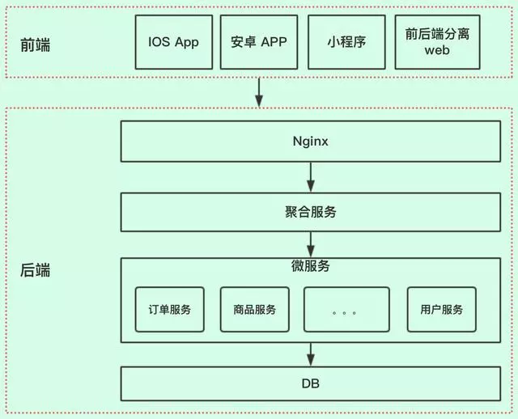
需要说明的是，有些小伙伴会回复说，这个架构太简单了吧，太low了，什么网关啊，缓存啊，消息中间件啊，都没有。因为这篇主要介绍的是API接口，所以我们聚焦点，其他的模块小伙伴们自行去补充。
接口交互
前端和后端进行交互，前端按照约定请求URL路径，并传入相关参数，后端服务器接收请求，进行业务处理，返回数据给前端。
针对URL路径的restful风格，以及传入参数的公共请求头的要求（如：app_version,api_version,device等），老顾这里就不介绍了，小伙伴们可以自行去了解，也比较简单。
后端服务器如何实现把数据返回给前端？
返回格式
后端返回给前端我们一般用JSON体方式，定义如下：
{ #返回状态码 code:integer, #返回信息描述 message:string, #返回值 data:object}CODE状态码
code返回状态码，一般小伙伴们是在开发的时候需要什么，就添加什么。如接口要返回用户权限异常，我们加一个状态码为101吧，下一次又要加一个数据参数异常，就加一个102的状态码。这样虽然能够照常满足业务，但状态码太凌乱了我们应该可以参考HTTP请求返回的状态码
：下面是常见的HTTP状态码：
200 - 请求成功
301 - 资源（网页等）被永久转移到其它URL
404 - 请求的资源（网页等）不存在
500 - 内部服务器错误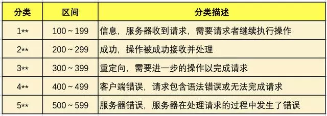
我们可以参考这样的设计，这样的好处就把错误类型归类到某个区间内，如果区间不够，可以设计成4位数。
#1000～1999 区间表示参数错误
#2000～2999 区间表示用户错误
#3000～3999 区间表示接口异常这样前端开发人员在得到返回值后，根据状态码就可以知道，大概什么错误，再根据message相关的信息描述，可以快速定位。Message这个字段相对理解比较简单，就是发生错误时，如何友好的进行提示。一般的设计是和code状态码一起设计，如
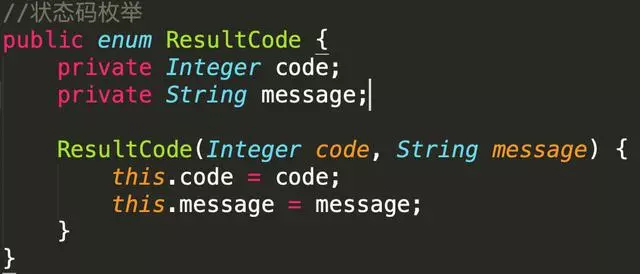
再在枚举中定义，状态码
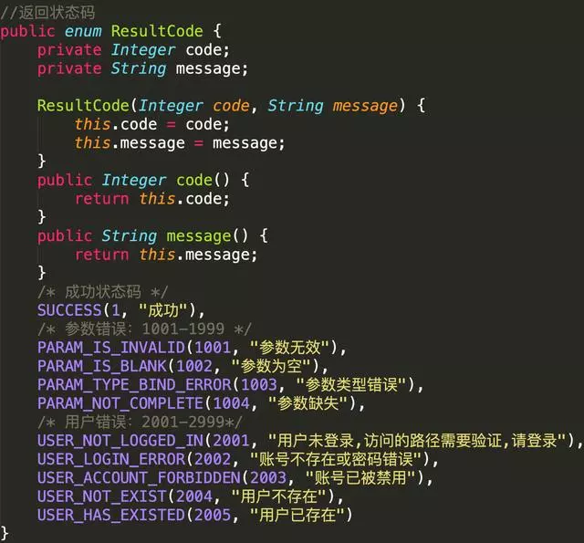
状态码和信息就会一一对应，比较好维护。Data返回数据体，JSON格式，根据不同的业务又不同的JSON体。我们要设计一个返回体类Result
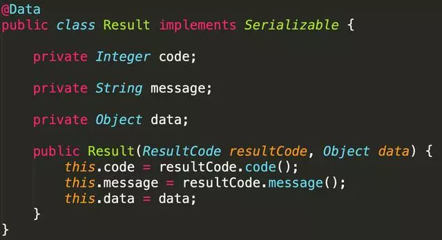
控制层Controller
我们会在controller层处理业务请求，并返回给前端，以order订单为例
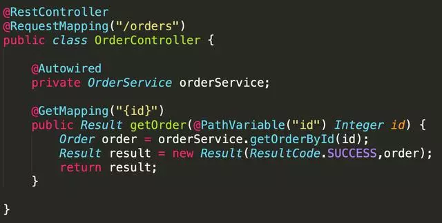
我们看到在获得order对象之后，我们是用的Result构造方法进行包装赋值，然后进行返回。小伙伴们有没有发现，构造方法这样的包装是不是很麻烦，我们可以优化一下。美观美化我们可以在Result类中，加入静态方法，一看就懂
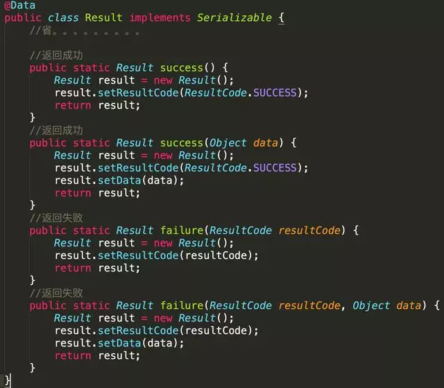
那我们来改造一下Controller
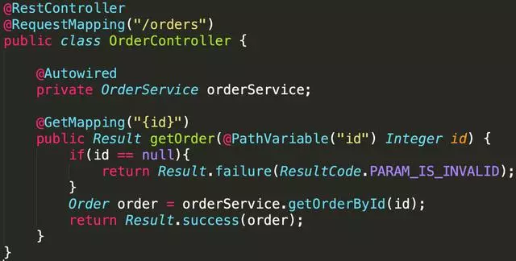
代码是不是比较简洁了，也美观了。优雅优化上面我们看到在Result类中增加了静态方法，使得业务处理代码简洁了。但小伙伴们有没有发现这样有几个问题：
1、每个方法的返回都是Result封装对象，没有业务含义2、在业务代码中，成功的时候我们调用Result.success，异常错误调用Result.failure。是不是很多余3、上面的代码，判断id是否为null，其实我们可以使用hibernate validate做校验，没有必要在方法体中做判断。
我们最好的方式直接返回真实业务对象，最好不要改变之前的业务方式，如下图
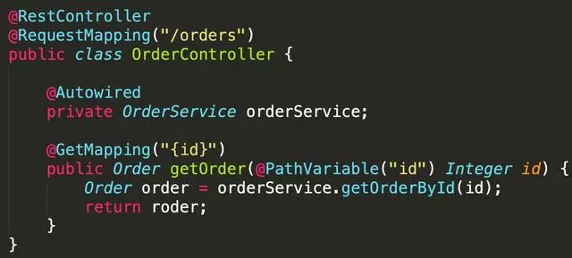
这个和我们平时的代码是一样的，非常直观，直接返回order对象，这样是不是很完美。那实现方案是什么呢？
实现方案
小伙伴们怎么去实现是不是有点思路，在这个过程中，我们需要做几个事情
1、定义一个注解@ResponseResult，表示这个接口返回的值需要包装一下2、拦截请求，判断此请求是否需要被@ResponseResult注解3、核心步骤就是实现接口ResponseBodyAdvice和@ControllerAdvice，判断是否需要包装返回值，如果需要，就把Controller接口的返回值进行重写。
注解类用来标记方法的返回值，是否需要包装
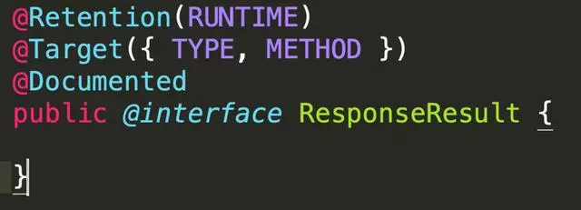
拦截器
拦截请求，是否此请求返回的值需要包装，其实就是运行的时候，解析@ResponseResult注解
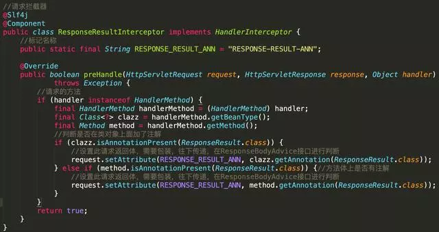
此代码核心思想，就是获取此请求，是否需要返回值包装，设置一个属性标记。重写返回体
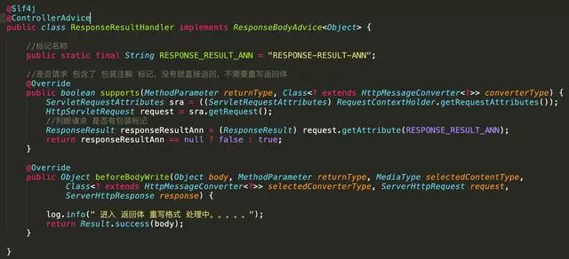
上面代码就是判断是否需要返回值包装，如果需要就直接包装。这里我们只处理了正常成功的包装，如果方法体报异常怎么办？处理异常也比较简单，只要判断body是否为异常类。
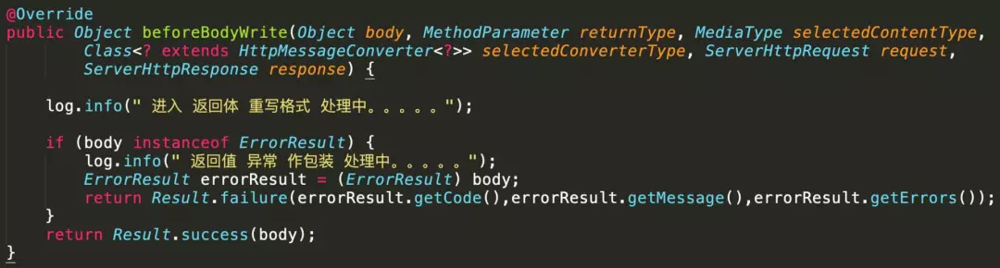
怎么做全局的异常处理，篇幅原因，这里就不做介绍了，只要思路理清楚了，自行改造就行。
重写Controller
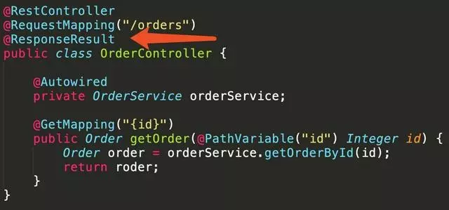
在控制器类上或者方法体上加上@ResponseResult注解，这样就ok了，简单吧。到此返回的设计思路完成，是不是又简洁，又优雅。这个方案还有没有别的优化空间，当然是有的。如：每次请求都要反射一下，获取请求的方法是否需要包装，其实可以做个缓存，不需要每次都需要解析。当然整体思路了解，小伙伴们就可以在此基础上面自行扩展，如有收获，请帮忙转发，您的鼓励是作者最大的动力.
联系QQ：137071249
QQ群：793305035